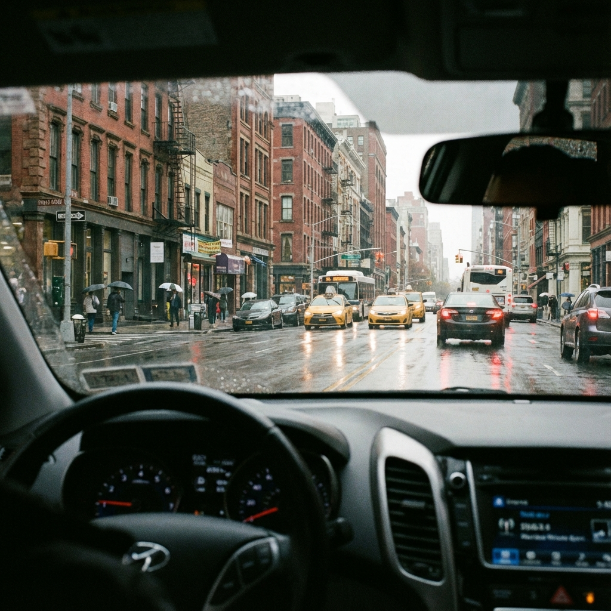

1. Object Detection
Finding "Needles in a Digital Haystack". Identifying and locating specific objects.
2. Image Classification
Assigning a single category label to an image.
Prediction:
DOG
Confidence: 98%
3. Image Segmentation
Dividing an image into pixel-perfect regions (Road, Car, Sky).

Road
Vehicles
4. Face Recognition
Identifying individuals using biometrics (like DigiYatra).
5. Action Recognition
Understanding movement and behavior (Surveillance).
🏃
Status: Idle